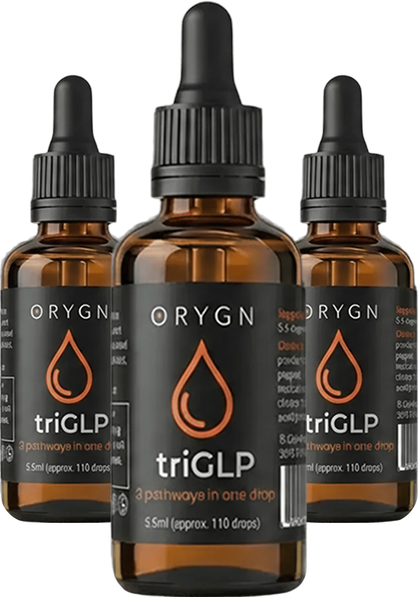
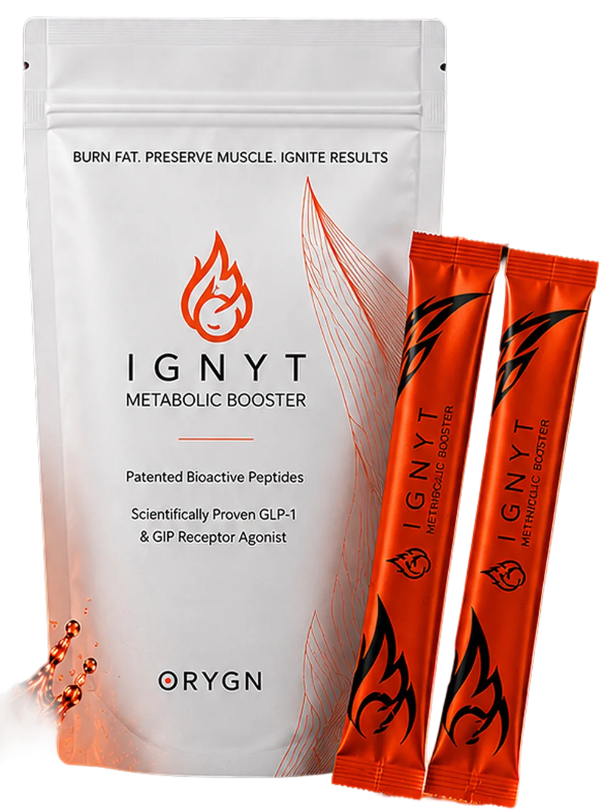
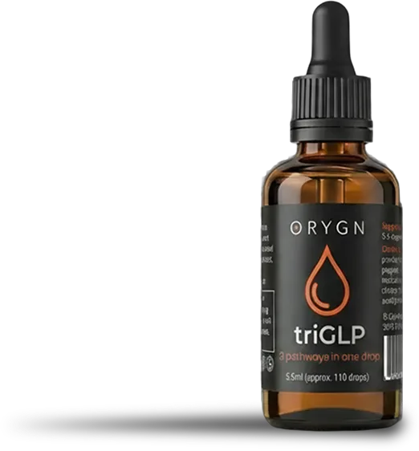

Pathway One
GLP-1
The Appetite Whisperer.
- Regulates hunger at the neural level by activating brain receptors
- Slows gastric emptying for natural satiety
- Reduces food cravings and portion sizes
- Promotes sustainable weight loss without effort
💬 Message us on Facebook (or text us) for more product & sampling info!
The Mode of Action
A proprietary peptide profile, fingerprinted as molecularly distinct from 1,324 other commercial hydrolysates, that simultaneously engages three of the body’s most powerful regulatory systems.
Pathway One
The Appetite Whisperer.
Pathway Two
The Core Shield
Pathway Three
The Metabolic Optimizer
Scroll below for more details…
The Clinical Evidence
triGLP is a double patent-protected bioactive peptide derived from Norwegian Atlantic salmon, classified as a New Dietary Ingredient (NDI) by the US FDA with self-GRAS status. The science is real. The results are documented.
Unique peptide composition fingerprinted as molecularly distinct from 1,324 other commercial hydrolysates.
Classified as a New Dietary Ingredient by the US FDA with self-GRAS (Generally Recognized As Safe) status.
Validated across independent clinical trials measuring BMI, body composition, inflammation, and metabolic markers.


When Will I See Results?
Real results from real clinical data. No gimmicks, no guesswork, just a documented protocol that works.
Weeks 1–4
You may experience
Weeks 5–8
You may experience
Week 9+
You may experience
Unlike pharma GLP-1s, when you stop, you don’t rebound. triGLP’s effects compound with use, supporting lasting metabolic change rather than dependency.
DISCLAIMER: These statements have not been evaluated by the Food and Drug Administration. This product is not intended to diagnose, treat, cure, or prevent any disease.
Pharma Results. Natural Delivery. Exclusively Distributed by ORYGN*
Peer-reviewed clinical research, independent trials, and global recognition, every product backed by uncompromising evidence.
Clinical Trial
Journal of Nutrition & Food Sciences · 2015
n = 48 · Placebo-controlled vs. whey protein isolate · 6 weeks · 16g/day
+140% ferritin (restored to normal); +14% hemoglobin vs. +2% in whey group (p<0.05). Basis for 6 FDA structure/function claims & Health Canada qualified claims.
Clinical Trial
Journal of Nutrition & Food Sciences
Overweight subjects · Placebo-controlled vs. WPI · 42 days · 16g/day
−5.9% BMI (p<0.05); significant changes in 4 metabolism-relevant serum biomarkers; consistent 3–6% reduction in fasting blood glucose.
Clinical Trial
Functional Foods in Health and Disease · 2024 · Vol.14(11): 814–842
n = 20 · Open-label, single-arm · 128 days · 4g/day · KGK Science Inc.
+10.24% perceived energy (women +14.55%); −9% oxidative stress; HMOX1 ↑4.09×; FTH1 ↑3.77×; skin/hair/nail +24% (women +34.5%); IL-5, IL-8 & CRP reduced.
Clinical Trial
Journal of Nutrition & Food Sciences · 2015
n = 48 · Placebo-controlled vs. whey protein isolate · 6 weeks · 16g/day
+140% ferritin (restored to normal); +14% hemoglobin vs. +2% in whey group (p<0.05). Basis for 6 FDA structure/function claims & Health Canada qualified claims.
In Vitro
Marine Drugs · MDPI · 2024 · 22(11): 490
In vitro · Currie C. et al. · Hofseth BioCare
Smallest ProGo® peptide fraction activates GLP-1 & GIP receptors; pancreatic islet cell protection; DPP-IV inhibition; improved glucose uptake into muscle.
In Vitro / Animal
Biomolecules · 2022 · 12(9): 1287
Mouse model of colitis · Wei J. et al. · Stanford University & Hofseth BioCare
ProGo® significantly reduced colon tissue injury, inflammatory cell infiltrates & oxidative stress. HMOX1 upregulation confirmed. Led by Dr. Karl Sylvester MD, Stanford.
In Vitro
Hofseth BioCare / Stanford University · Pre-clinical
Human cell lines · HBC & Stanford University
ProGo® upregulated 16 oxidative protective genes and downregulated 9 oxidative stress genes. FTH1, HMOX1 & ALOX12 showed notable fold-change supporting observed clinical benefits.
In Vitro
Hofseth BioCare / Stanford University · Pre-clinical
Human cell lines · HBC & Stanford University
ProGo® upregulated 16 oxidative protective genes and downregulated 9 oxidative stress genes. FTH1, HMOX1 & ALOX12 showed notable fold-change supporting observed clinical benefits.
The Honest Comparison
We’re not asking you to choose between results and your health. triGLP delivers both.
No subscription required. No commitment.
Proof in Every Drop
This is what happens when the science actually works.
11 lbs in 11 days!
★★★★★
“I can’t believe it! I lost 11 pounds in 11 days! I have to force myself to eat when I am taking this. No needles and I feel like a million bucks!”
6 lbs in 19 days
★★★★★
“19 days, 10 drops a day. I’m down 6 pounds, my body fat has dropped, my energy is up, and my confidence is HIGH… even my husband keeps telling me how good I look!”
Results in 3 days
★★★★★
“Just three days and I’m already down a pound. Cravings diminished significantly. Giddy, steady energy all day long, no crash, no fog, just steady, happy me!”
6.2 lbs lost
★★★★★
“From Day 1 and even better every day thereafter, energy that sustained ALL DAY with so much more focus. Have lost 6.2 pounds and feel like I have lost inches!”
Manages Hashimoto’s
★★★★★
“Didn’t realize how much triGLP helped until I ran out. Despite managing Hashimoto’s and perimenopause, it kept me balanced, calming cravings and food noise. Could clearly feel the difference!”
3 lbs in 6 days
★★★★★
“6 days testing, whole new way of living! Energy, clarity, focus. No food noise or emotional eating. Down 3lbs, bye stubborn fat. Transforming me in every way!”
TriGLP Drops…
triGLP contains only four all-natural ingredients. Most supplements bury their formula in a proprietary blend. We list every ingredient because we have nothing to hide, and everything to prove.
The active peptide complex
Sashimi-grade Atlantic salmon from Norway, processed via patented gentle enzymatic hydrolysis. The source of all three bioactive pathways: GLP-1, GLP-2, and antioxidant activation.
Bioavailability enhancer
Supports absorption and adds natural flavor. Rich in flavonoids that complement the anti-inflammatory effects of the peptide complex.
Digestive support & anti-inflammatory
Synergizes with the GLP-2 gut health pathway. Ginger’s natural gingerols support the digestive benefits and further reduce systemic inflammation.
Ultra-pure carrier
That’s it. No fillers, no binders, no artificial preservatives, no synthetic compounds. The formula is exactly as clean as it sounds.
FDA NDI Status + Self-GRAS Certified. triGLP has been classified as a New Dietary Ingredient by the US FDA, the highest safety standard for dietary supplements.

IGNYT Powder…
IGNYT contains only four all-natural ingredients. We created IGNYT with advanced technology that delivers maximum bioavailability and unlocks the full potential of every ingredient.
The active peptide complex
Sashimi-grade Atlantic salmon from Norway, processed via patented gentle enzymatic hydrolysis. The source of all three bioactive pathways: GLP-1, GLP-2, and antioxidant activation.
Provides natural color and additional antioxidants.
A natural, plant-based sweetener with zero calories.
Delicious and refreshing taste you’ll love.
PATENTED, PROPRIETARY EXTRACTION PROCESS. Advanced technology that delivers maximum bioavailability and unlocks the full potential of every ingredient.
Frequently Asked Questions
Place 5–10 drops under your tongue (sublingual) once or twice daily. Hold for 30–60 seconds before swallowing for maximum absorption. The sublingual delivery bypasses the digestive system for faster, more efficient uptake.
Yes, 100%. triGLP contains only four ingredients: Norwegian Salmon Protein Hydrolysate (the active peptide), Deionized Water, Organic Lemon Peel Extract, and Organic Ginger Root Extract. No synthetic compounds, no fillers, no artificial preservatives.
Many of the other GLP products (not all) are synthetic drugs delivered by weekly injection that activate only one pathway (GLP-1). They typically cost $900–1,300/month without insurance, have documented side effects including nausea and muscle loss, and cause rebound weight gain when stopped. triGLP is an all-natural bioactive peptide that activates three pathways (GLP-1, GLP-2, and antioxidant), costs as little as $65/month, has no serious side effects, and compounds with continued use.
triGLP has been validated across multiple independent clinical studies showing: 6–7% BMI reduction in 6–8 weeks, 10% body fat decrease with zero muscle loss, 15% reduction in IL-6 inflammation markers, 100% improvement in muscle glucose uptake, and 3–6% reduction in fasting blood glucose. It is double patent-protected and holds FDA New Dietary Ingredient (NDI) status with self-GRAS certification.
Most users report reduced cravings and more stable energy within the first 4 weeks. Significant fat loss and body composition changes typically become visible between weeks 5–8. The full clinical protocol runs 8+ weeks for maximum results, with effects that compound with continued use.